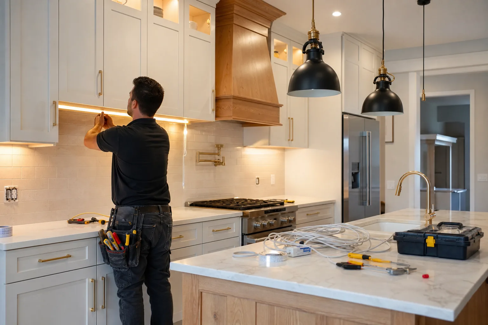
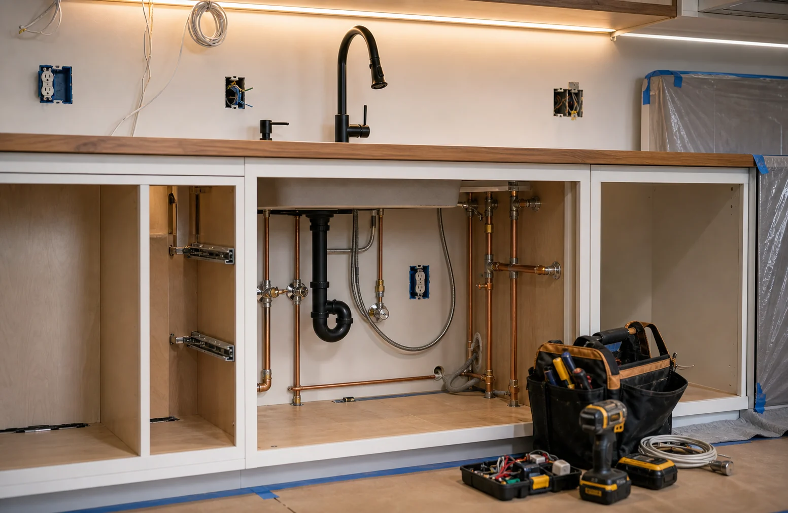

Electrical Routing for Safer, Better Lit Kitchens
Lighting and outlet plans affect how a kitchen works every day. We help route requests to independent providers who can discuss code-aware electrical updates and lighting installation.
Common Scope Items
Electrical work should be handled by properly licensed providers where required. Always confirm license, permits, and inspection needs.
- Recessed lights, pendants, under-cabinet lighting, dimmers, switches, and task lighting.
- Outlet placement, GFCI needs, appliance circuits, island outlets, and charger locations.
- Coordination with cabinets, backsplash, range hood, open shelves, and appliance changes.
- Questions about permits, circuit capacity, panel limitations, inspections, and safe shutoff procedures.
Layered Light
Plan ambient, task, and accent lighting so counters, sink, range, and island areas are useful after dark.
Licensed Work
Ask whether the provider is licensed for electrical work in your area and who handles permits or inspections.
Coordination
Electrical rough-in may need to happen before tile, cabinets, drywall repair, or final fixture installation.
Describe Your Lighting Plan
Share whether you need new lights, outlet updates, appliance power, or fixture replacement so your request is clearer.
- Add photos of the current kitchen.
- Include rough measurements or room size.
- Share timing, budget range, and priorities.

Lighting Plans Should Match Work Zones and Code Needs
Lighting and electrical work can affect cabinets, backsplash, appliance locations, and inspection requirements. Requests should be specific about how the kitchen will be used.
Prepare Before Contact
- Current switch and outlet locations
- Desired pendants, recessed, or task lighting
- Appliance changes and island plans
- Photos of panel or known circuit issues
Ask the Provider
- Whether licensed electrical work is required
- Who handles permits and inspections
- How drywall or tile access is repaired
- What fixtures or parts you must supply

Best for homeowners adding pendants, under-cabinet lighting, safer outlets, dimmers, or electrical changes during a remodel.
Electrical Requests Should Separate Design Goals From Licensed Work
Kitchen lighting often includes task light, ambient light, outlet planning, switching, dimmers, appliance circuits, and under-cabinet lighting. A clear request helps homeowners ask the right questions about licensed scope and provider responsibilities.
Light layers
Ceiling lights, pendants, under-cabinet strips, toe-kick lights, accent lights, and dimming needs.
Power planning
Outlet placement, GFCI needs, appliance circuits, dedicated lines, and panel capacity questions.
Switching
Three-way locations, dimmers, smart controls, low-voltage drivers, and hidden transformer placement.
Verification
Ask about license, permits, inspections, code requirements, and who patches walls afterward.
Before You Speak With a Provider
- Photograph existing switches, outlets, ceiling fixtures, and the electrical panel if accessible.
- List appliances being added or relocated before requesting electrical help.
- Ask what parts of the work require a licensed electrician in your area.